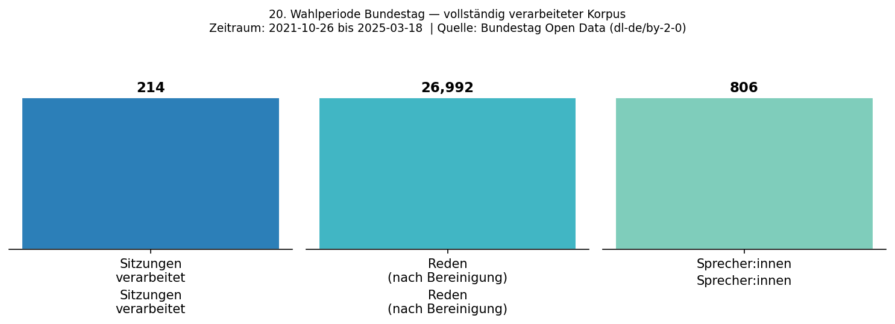
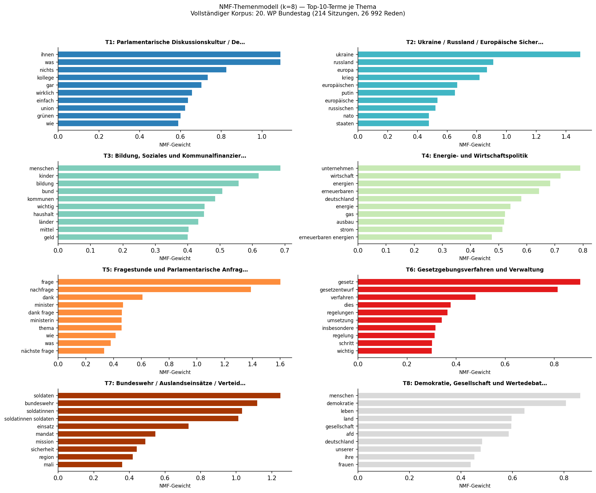
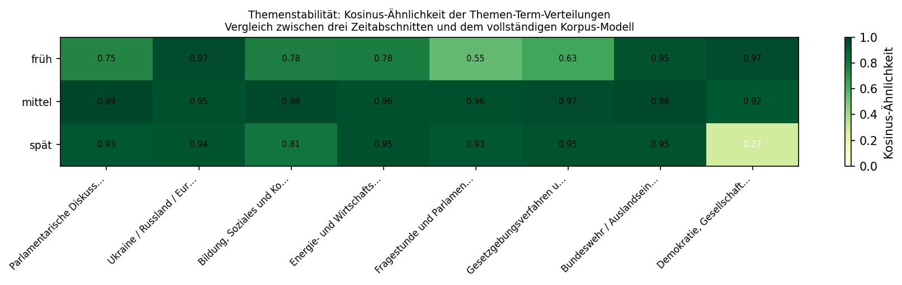
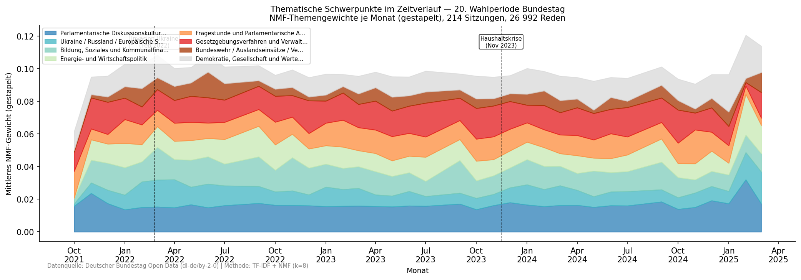
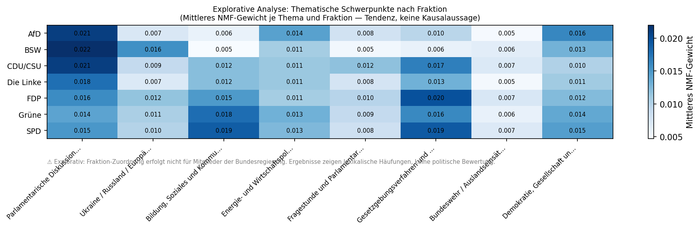
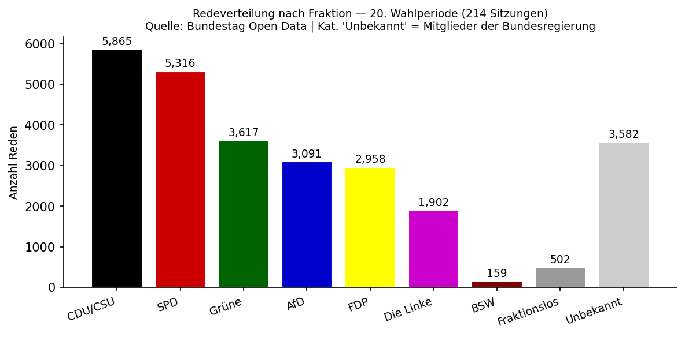

214
Plenarsitzungen
26.992
Redeeinheiten (nach Bereinigung)
806
Sprecher:innen (speaker_id)
13,75 Mio.
Roh-Wörter (vor Bereinigung)
5,91 Mio.
Bereinigte Wörter (nach Stopwortfilter)
194.570
Einzigartige Wortformen (Vokabular)
8
NMF-Themen (k=8)
Okt. 2021 – Mär. 2025
Analysezeitraum
Datenquelle
Bundestag Open Data (dl-de/by-2-0)
Sprache
Python 3.13 · scikit-learn
Methode
TF-IDF + NMF (k=8, Seed 42)
Status
Vollständig ausgeführt & validiert
Methodische Relevanz
Zeigt strukturierte Verarbeitung großer deutschsprachiger Textbestände, reproduzierbare Merkmalsextraktion, unüberwachte thematische Extraktion aus Rohdaten sowie transparente Kommunikation von Ergebnissen und Grenzen — ohne Schlüsse zu ziehen, die über die methodische Aussagekraft der Daten hinausgehen.
Korpusdefinition: Was zählt als „Rede“?
Extrahiert werden alle <rede>-Elemente aus den offiziellen Bundestags-XML-Dateien — unabhängig von Länge oder Funktion. Das bedeutet: Sitzungsleitende Bemerkungen der Bundestagspräsident:innen sind enthalten (z.B. Bärbel Bas, Fraktion SPD). Mitglieder der Bundesregierung (Scholz, Habeck, Faeser u.a.) sind enthalten, erscheinen im XML ohne Fraktionszuordnung und werden als „Unbekannt“ geführt (3.576 Reden, 101 Sprecher:innen). Zwischenrufe (<kommentar>-Elemente) sind ausgeschlossen. Prozedurale Annotationen im Redetext (Beifall, Zuruf etc.) werden in der Vorverarbeitung entfernt. 1 Rede mit 0 bereinigten Tokens nach der Vorverarbeitung wurde ausgeschlossen. Kurzantworten und Verfahrensbeiträge unter 50 Roh-Tokens: 512 Fälle (im Datensatz enthalten, aber gering gewichtet in der NMF).
Analytische Zusammenfassung: Die NMF-Themenmodellierung (k=8) über den vollständigen Korpus der 20. Wahlperiode identifiziert acht lexikalisch kohärente Themencluster. Sechs der acht Themen erreichen eine Kosinus-Ähnlichkeit ≥0,90 mit dem Vollkorpus-Modell in der mittleren Wahlperiode. Die thematische Entwicklung über die Zeit spiegelt nachweisbare politische Ereignisse wider: der Ukraine-Themencluster erreicht ab Februar 2022 eine deutlich erhöhte Prävalenz; der Energie- und Wirtschaftscluster intensiviert sich 2022/23; das Demokratie-Thema gewinnt 2023/24 an Gewicht. Diese Muster sind explorativ interpretierbar, nicht kausal.
Analysefragestellung
Welche thematischen Strukturen lassen sich mittels unüberwachter NLP-Methoden aus dem vollständigen Plenarprotokoll-Korpus der 20. Wahlperiode extrahieren? Sind die identifizierten Themencluster über Zeitabschnitte hinweg stabil, und spiegeln die zeitlichen Prävalenzverläufe nachvollziehbare politische Ereignisse wider?
Der Analysefokus liegt auf methodischer Reproduzierbarkeit und transparenter Darstellung der Ergebnisse. Die extrahierten Themen beschreiben lexikalische Häufungsmuster im Plenartext, keine politischen Positionen oder Bewertungen.
Datenquelle
Die Plenarprotokolle des Deutschen Bundestags werden im strukturierten XML-Format unter offener Lizenz veröffentlicht (Datenlizenz Deutschland – Namensnennung – Version 2.0, dl-de/by-2-0). Jede XML-Datei enthält eine vollständige Plenarsitzung mit maschinenlesbarer Struktur nach offiziellem DTD-Schema (Version 1.0.2, September 2023): Sitzungsnummer, Datum, Redner:in, Fraktion, Rede-ID und vollständiger Redetext.
Datenquelle
Deutscher Bundestag — Open-Data-Portal, bundestag.de/services/opendata. 214 XML-Dateien, direkt herunterladbar (keine Authentifizierung erforderlich), Lizenz: dl-de/by-2-0. Vollständiger Zeitraum: 26. Oktober 2021 bis 18. März 2025.
Pipeline
1
Download (01_fetch_data.py)
Automatisierter Download aller 214 XML-Dateien über offizielle Bundestag-URLs. URL-Liste und Session-Manifest werden als Artefakt gespeichert. Gesamtvolumen: ~191 MB.
2
XML-Parsing (02_parse_xml.py)
lxml-basiertes Traversieren aller <rede>-Elemente. Extraktion: Sitzungsnummer, Datum, Rede-ID, Sprecher:in (Vor- und Nachname), Fraktion, Redetext. <kommentar>-Elemente (Beifall, Zwischenrufe) werden übersprungen. Ausgabe: strukturiertes CSV mit einer Zeile pro Rede.
3
Vorverarbeitung (03_preprocess.py)
NFKC-Normalisierung, Kleinschreibung, Satzzeichen-Entfernung, Tokenisierung, Filterung gegen eine kuratierte deutsche Stopwortliste (parlamentarische Phrasen und Funktionswörter). Vokabularstatistiken werden als Artefakt gespeichert.
4
TF-IDF & NMF (04_analyse_full.py)
TF-IDF-Matrix (max_features=3.000, min_df=10, Unigramme+Bigramme, sublinear TF). NMF-Themenmodell: k=8, NNDSVDA-Initialisierung, Seed=42. Stabilitätsanalyse: drei temporale Teilkorpora × unabhängige NMF-Fits × Kosinus-Ähnlichkeit mit Vollkorpus-H-Matrix. Top-3-Repräsentativdokumente je Thema mit vollständiger Provenienz.
5
Visualisierung (05_visualise_full.py)
Sechs statische Abbildungen (matplotlib, Agg-Backend, DPI=150): Korpusübersicht, Top-Terme je Thema, Stabilitätsheatmap, monatlicher Themenverlauf (gestapelt), Fraktion-Thema-Heatmap (explorativ), Redeverteilung nach Fraktion.
Ergebnisse

Abb. 1 — Korpusübersicht: vollständige 20. Wahlperiode. 214 Sitzungen, 26.992 Reden nach Bereinigung, 806 eindeutige Sprecher:innen. Quelle: Bundestag Open Data (dl-de/by-2-0).
NMF-Themenmodell (k=8) — Top-Terme und Interpretation
Themenbezeichnungen sind interpretativ und beschreiben lexikalische Häufungen, keine verifizierten politischen Kategorien. Top-Terme werden direkt aus der NMF-H-Matrix entnommen (gewichtet nach NMF-Gewicht, absteigend).
| T# | Themenbezeichnung | Top-Terme (extrahiert) |
|---|
| T1 |
Parlamentarische Diskussionskultur / Debattenbeiträge |
ihnen, was, nichts, kollege, gar, wirklich, einfach, union, grünen, wie |
| T2 |
Ukraine / Russland / Europäische Sicherheitspolitik |
ukraine, russland, europa, krieg, europäischen, putin, nato, russischen, frieden, waffen |
| T3 |
Bildung, Soziales und Kommunalfinanzierung |
menschen, kinder, bildung, bund, kommunen, haushalt, länder, geld, familien, programm |
| T4 |
Energie- und Wirtschaftspolitik |
unternehmen, wirtschaft, energien, erneuerbaren, energie, gas, ausbau, strom, klimaschutz, industrie |
| T5 |
Fragestunde und Parlamentarische Anfragen |
frage, nachfrage, dank, minister, ministerin, nächste frage, fragen, thema |
| T6 |
Gesetzgebungsverfahren und Verwaltung |
gesetz, gesetzentwurf, verfahren, regelungen, umsetzung, regelung, entwurf, daten, maßnahmen |
| T7 |
Bundeswehr / Auslandseinsätze / Verteidigung |
soldaten, bundeswehr, soldatinnen, einsatz, mandat, mission, sicherheit, mali, nato, stabilität |
| T8 |
Demokratie, Gesellschaft und Wertedebatte |
menschen, demokratie, leben, land, gesellschaft, afd, deutschland, frauen, gewalt, freiheit |

Abb. 2 — NMF-Themenmodell (k=8): Top-10-Terme je Thema nach NMF-Gewicht. Vollständiger Korpus: 214 Sitzungen, 26.992 Reden. Themenbezeichnungen sind interpretativ.
Stabilitätsanalyse der Themen
Um die Robustheit des Themenmodells zu beurteilen, wurde der Korpus chronologisch in drei Teilabschnitte gleicher Größe aufgeteilt. Für jeden Teilabschnitt wurde ein NMF-Modell mit identischen Parametern unabhängig trainiert — auf der Teilmenge der Dokument-Term-Matrix des jeweiligen Abschnitts. Der gemeinsame Merkmalsraum (TF-IDF-Vokabular) stammt aus dem Gesamtkorpus; die Modellparameter werden vollständig neu optimiert.
Die Kosinus-Ähnlichkeit zwischen den Themen-Term-Verteilungen (H-Matrizen) des Teil-Modells und des Vollkorpus-Modells misst, wie nah ein Teil-Thema dem entsprechenden Vollkorpus-Thema liegt. Zuordnung erfolgt per Greedy-Argmax: jedes Teil-Thema wird dem Vollkorpus-Thema mit der höchsten Ähnlichkeit zugeordnet. Im „früh“-Abschnitt führt dies zu Kollisionen (FC3 und FC4 werden je zweimal zugeordnet) — dies zeigt die Grenzen der Greedy-Methode und ist methodisch relevant.
Gesamtmittelwert über alle 24 Themen-Abschnitt-Paare: 0,867. Der oft zitierte Wert 0,963 bezieht sich ausschließlich auf den mittleren Zeitabschnitt (Jan. 2023–Apr. 2024), der die höchste Stabilität aufweist.
| Zeitabschnitt |
T1 | T2 | T3 | T4 | T5 | T6 | T7 | T8 |
Mittelwert |
Früh (Okt.2021–ca.Dez.2022)
n≈8.997; Greedy-Kollisionen: FC3, FC4 |
0,746 |
0,970 |
0,777 |
0,780 |
0,550 |
0,634 |
0,946 |
0,972 |
0,797 |
Mittel (ca.Jan.2023–ca.Apr.2024)
n≈8.997; keine Kollisionen |
0,989 |
0,950 |
0,984 |
0,956 |
0,957 |
0,973 |
0,978 |
0,920 |
0,963 |
Spät (ca.Mai 2024–Mär.2025)
n≈8.998; keine Kollisionen |
0,935 |
0,944 |
0,810 |
0,949 |
0,932 |
0,947 |
0,946 |
0,273 |
0,842 |
| Gesamtmittel (24 Themen-Abschnitt-Paare) |
— |
0,867 |
Farbkodierung: grün ≥ 0,90 | gelb 0,70–0,89 | rot < 0,70. Werte = Kosinus-Ähnlichkeit (Greedy-Argmax) der Teil-Themenverteilung mit dem Vollkorpus-Thema. Gesamtmittel 0,867 über alle 24 Paare.
Methodische Einschränkungen der Stabilitätsanalyse
T5 (Fragestunde), früh (0,550): Der Fragestunden-Cluster ist im frühen Abschnitt noch nicht konsolidiert. Im frühen Abschnitt werden T1 (FC3) und T4 (FC3) sowie T3 (FC4) und T6 (FC4) jeweils auf dasselbe Vollkorpus-Thema zugeordnet (Greedy-Kollision), was die Vergleichbarkeit einschränkt. T8 (Demokratie/Wertedebatte), spät (0,273): Das stark abweichende Ergebnis zeigt, dass das NMF-Modell für den späten Abschnitt auf einem anderen lokalen Optimum einrastet. Dies ist eine algorithmische Eigenschaft, keine inhaltliche Aussage. Gesamtbewertung: Die Stabilitätsanalyse ist ein ergänzendes Sensitivitätsmerkmal, kein formaler Gütetest. Ein robusterer Ansatz würde Hungarian Matching und unabhängige TF-IDF-Vokabulare je Abschnitt verwenden.

Abb. 3 — Themenstabilität: Kosinus-Ähnlichkeit der Themen-Term-Verteilungen zwischen drei Zeitabschnitten und dem Vollkorpus-Modell. Der mittlere Abschnitt (Jan. 2023–Apr. 2024) zeigt die höchste Stabilität (Ø 0,963).
Zeitlicher Themenverlauf
Die monatlichen mittleren NMF-Gewichte je Thema zeigen, wie die thematische Zusammensetzung der Plenardebatten über die Wahlperiode variiert. Die gestapelte Fläche gibt die relative Präsenz der acht Themen je Kalendermonat wieder.

Abb. 4 — Thematische Schwerpunkte im Zeitverlauf: monatliche mittlere NMF-Gewichte (gestapelt). Ereignismarkierungen: Russlands Invasion der Ukraine (24. Februar 2022) und Bundesverfassungsgerichtsurteil zum Bundeshaushalt (November 2023). Muster sind explorativ; keine Kausalaussagen.
Repräsentativdokumente je Thema
Die jeweils drei Reden mit dem höchsten NMF-Gewicht je Thema dienen zur manuellen Plausibilitätsprüfung der Themenzuweisungen. Alle Angaben sind aus dem Parsing der offiziellen XML-Protokolle entnommen.
T2 — Ukraine / Russland / Europäische Sicherheitspolitik
Rang 1 · Score 0,1229 · Adis Ahmetovic (SPD) · 85. Sitzung, 9. Februar 2023 · Rede-ID: ID208506200
„Eines habe ich in der Schule gelernt: Falsche Aussagen bleiben falsch, egal ob sie geschrieben, gesprochen oder geschrien werden [...] Vor genau einem Jahr durfte ich hier [...] meine erste Rede halten – quasi zum selben Thema –, nur wenige Tage vor dem Einmarsch Russlands in die Ukraine [...]"
Rang 2 · Score 0,1203 · Olaf Scholz (Bundesregierung) · 75. Sitzung, 14. Dezember 2022 · Rede-ID: ID207500100
„Russlands Angriffskrieg gegen die Ukraine ist ein entsetzlicher Einschnitt. Er trifft zuallererst die Ukrainerinnen und Ukrainer. Sie ertragen seit fast zehn Monaten Vertreibung und Verschleppung, Verwundung und Tod [...]"
Rang 3 · Score 0,1196 · Christian Dürr (FDP) · 19. Sitzung, 27. Februar 2022 · Rede-ID: ID201901100
„Die Realität in Europa so zu verzerren [...] ist niederträchtig. [...] Die Bundesrepublik Deutschland ist eine wehrhafte Demokratie, und zwar nach außen – das beweist die Mehrheit des Deutschen Bundestages gerade [...]"
T7 — Bundeswehr / Auslandseinsätze / Verteidigung
Rang 1 · Score 0,1679 · Boris Pistorius (Bundesregierung) · 154. Sitzung, 22. Februar 2024 · Rede-ID: ID2015410800
„Die Männer und Frauen unserer Bundeswehr tragen weltweit dazu bei, Terror zu bekämpfen, Frieden und Stabilität zu sichern. Sie bilden aus, sie beraten, sie unterstützen bei der Einhaltung von Friedensabkommen [...]"
Rang 2 · Score 0,1583 · Boris Pistorius (Bundesregierung) · 102. Sitzung, 10. Mai 2023 · Rede-ID: ID2010211800
„Seit zehn Jahren sind deutsche Kräfte bei MINUSMA aktiv. Mehr als 18 000 deutsche Soldatinnen und Soldaten waren in diesem Zeitraum bisher bei dieser UN-Mission im Einsatz [...]"
T8 — Demokratie, Gesellschaft und Wertedebatte
Rang 1 · Score 0,1121 · Nancy Faeser (Bundesregierung) · 10. Sitzung, 12. Januar 2022 · Rede-ID: ID201006200
„Wir wollen mehr Fortschritt wagen. Fortschritt braucht Sicherheit. Nur so werden wir den notwendigen Rückhalt für Veränderungen haben. Wir sind ein starkes Land. Die überwältigende Mehrheit in unserem Land steht hinter unserer Demokratie [...]"
Rang 2 · Score 0,1110 · Nancy Faeser (Bundesregierung) · 134. Sitzung, 9. November 2023 · Rede-ID: ID2013400100
„Sehr verehrte Damen und Herren! Liebe Margot Friedländer! [...] „Es wird eine Zeit kommen, wo man sich fragt, wie ein bis dahin gesittetes, anständiges Volk sich zu solchen Greueltaten veranlassen konnte." Das schrieb der Düsseldorfer Jude Albert Herzfeld im Rückblick [...]"
Explorative Analyse: Fraktion × Thema
Explorativ — keine kausalen Aussagen
Mitglieder der Bundesregierung (Scholz, Habeck, Faeser, Pistorius u.a.) erscheinen im XML ohne Fraktionszuordnung und werden als „Unbekannt" geführt. Die Fraktion-Thema-Heatmap zeigt lexikalische Häufungsmuster, keine politischen Positionen oder kausalen Zusammenhänge.

Abb. 5 — Mittleres NMF-Gewicht je Thema und Fraktion (explorativ). Hellere Felder indizieren höhere mittlere Themengewichte in Reden dieser Fraktion.

Abb. 6 — Redeverteilung nach Fraktion: 214 Sitzungen, 26.992 Reden. Kat. „Unbekannt" = Bundesregierungsmitglieder ohne Fraktionszuordnung in der XML-Quelle.
Grenzen der Analyse
- Korpusinhalt: Der Datensatz enthält alle
<rede>-Elemente — einschließlich kurzer Sitzungsleitungs-Beiträge, Verfahrensformulierungen und Kurzantworten der Bundesregierung. Nicht alle Einheiten sind „Substanzreden“ im politischen Sinn.
- Stabilitätsmethodik: Die Stabilitätsanalyse nutzt ein gemeinsames TF-IDF-Vokabular (Gesamtkorpus) für alle Teilabschnitte, keine vollständig unabhängigen Merkmalräume. Zuordnung per Greedy-Argmax (kein Hungarian Matching). Im frühen Abschnitt treten Kollisionen auf (zwei Teil-Themen je auf dasselbe Vollkorpus-Thema zugeordnet). Gesamtmittelwert 0,867 über alle 24 Paare; der Wert 0,963 bezieht sich nur auf den mittleren Zeitabschnitt.
- Unüberwachte Themenextraktion: NMF-Themen sind lexikalische Cluster, keine verifizierten inhaltlichen Kategorien. Themenbezeichnungen sind interpretativ und können anders bezeichnet werden.
- Komposita: Compound-Splitting wurde nicht angewendet. Komposita (z.B. Digitalisierungsstrategie) werden als einzelne Tokens verarbeitet, was die Recall-Rate semantisch verwandter Terme reduziert.
- k-Wahl: k=8 wurde anhand der Interpretierbarkeit gewählt, nicht durch ein formales Kohärenzmaß. Andere k-Werte können andere, ebenso kohärente Themenstrukturen erzeugen.
- Fraktion-Zuordnung: Mitglieder der Bundesregierung erscheinen ohne Fraktionszuordnung im XML-Format (101 Sprecher:innen, 3.576 Reden). Fraktion-bezogene Analysen sind entsprechend eingeschränkt.
- T8-Instabilität (spät) und Greedy-Kollisionen (früh): Zwei methodische Befunde, die getrennt interpretiert werden müssen — beide sind Algorithmuseigenschaften, keine inhaltlichen Befunde. Dokumentation in der Stabilitätstabelle.
- Keine politischen Schlüsse: Die Analyse beschreibt lexikalische Häufungsmuster in öffentlichen Plenarprotokollen. Sie enthält keine Aussagen über politische Positionen, Absichten oder Parteiverhalten.
Reproduzierbarkeit
Die vollständige Pipeline läuft in fünf nummerierten Skripten (01–05), die sequenziell aus einem frischen Clone ausgeführt werden können. Alle 214 Quell-XML-Dateien sind direkt über öffentliche Bundestag-URLs abrufbar. Parameter: TF-IDF max_features=3.000, min_df=10; NMF k=8, NNDSVDA, Seed=42. Alle Abbildungen werden vollständig aus Code generiert — kein manuelles Nachbearbeiten. Output-Artefakte: full_corpus_stats.json, topic_terms_full.csv, topic_stability.csv, representative_docs.csv, monthly_topic_share.csv, fraktion_topic.csv, doc_topics_full.csv.
Tools
Python 3.13
lxml
pandas
scikit-learn
TF-IDF
NMF (k=8)
matplotlib
NumPy
Git
Datenverwendung & Ethikhinweis
Dieses Projekt verarbeitet ausschließlich öffentlich zugängliche parlamentarische Plenarprotokolle, die der Deutsche Bundestag unter offener Lizenz (dl-de/by-2-0) bereitstellt. Es handelt sich um eine methodische Demonstration automatisierter Textverarbeitung auf Aggregatebene. Es werden keine privaten Daten verarbeitet, keine individuellen Profile erstellt und keine politischen Bewertungen vorgenommen. Alle Ergebnisse beschreiben Muster im öffentlichen parlamentarischen Sprachgebrauch.